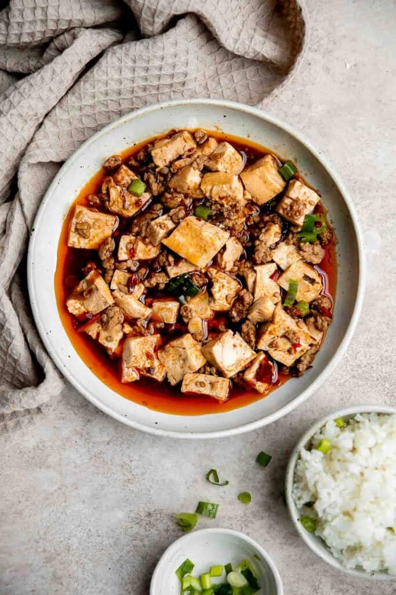

Description
Heartwarming, homely and utterly delicious, this is one of
the most famous Sichuanese dishes, and epitomizes the spicy
generosity of the folk cooking of the region. The Sichuan pepper
will make your lips tingle pleasantly, and the tender tofu will
slip smoothly down your throat. Serve it alongside rice and some
delicate greens.
Ingredients
- 500g plain white tofu
- 6 tbsp cooking oil
- 100g ground beef
- 2 1/2 tbsp Sichuan chili bean paste
- 1 tbsp fermented black beans
- 2 tsp ground chilies
- 1 tbsp finely chopped garlic
- 1 tbsp finely chopped ginger
- 175ml stock or water
- 1/4 tsp ground white pepper
- 2 stalks Chinese green garlic or 2 spring onions, cut into 2cm lengths
- 1 tbsp potato starch, mixed with 2½ tbsp cold water
- 1 tsp ground roasted Sichuan pepper
Steps
- Cut the tofu into 2cm cubes and leave to steep in very hot,
lightly salted water while you prepare the other ingredients.
- Heat a seasoned wok over a high flame. Pour in 1 tbsp of the
cooking oil and heat until the sides of the wok have begun to
smoke. Add the beef and stir-fry until it is fully cooked and
fragrant, breaking the clumps of meat into tiny pieces as you go.
Remove from the wok with a slotted spoon and set aside.
- Rinse and dry the wok if necessary, then re-season it and
return to a medium flame. Pour in remaining cooking oil and
swirl it around. Add the chilli bean paste and stir-fry until
the oil is a rich red colour and smells delicious. Next add the
black beans and ground chillies and stir-fry for a few seconds
more until you can smell them too, then do the same with the
garlic and ginger. Take care not to overheat the aromatics –
you want to end up with a thick, fragrant sauce, and the secret
is to let them sizzle gently, allowing the oil to coax out their
flavours.
- Remove the tofu from the hot water with a perforated ladle,
shaking off any excess liquid, and lay it gently into the wok.
Sprinkle over the beef, then add the stock or water and white
pepper. Nudge the tofu tenderly into the sauce with the back of
your ladle or wok scoop to avoid breaking up the cubes. Bring
to the boil, then simmer for a couple of minutes to allow the
tofu to absorb the flavours of the seasonings.
- If you're using green garlic, stir this in now. When just
cooked, add a little of the potato starch mixture and stir
gently as the liquid thickens. Repeat this twice more, until
the sauce clings deliciously to the seasonings and tofu
(don't add more than you need). If you're using spring onion,
add this now, nudging it gently into the sauce.
- Pour everything into a deep serving bowl. Sprinkle with the
ground roasted Sichuan pepper and serve.